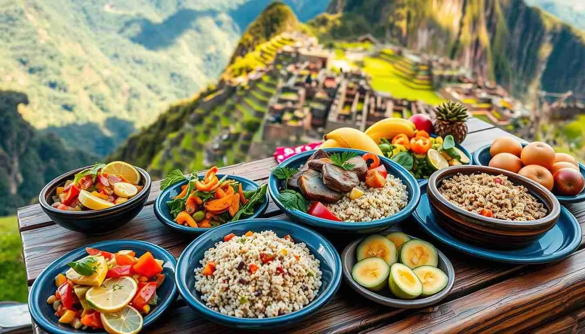

Peru has a deep cultural history influenced by ancient civilizations such as the Inca and by Spanish traditions. Popular places to visit include Machu Picchu, the city of Cusco, and Lake Titicaca. Visitors can enjoy traditional music, festivals, and colorful markets throughout the country.

Peru is known for its unique food and famous landmarks. Traditional Peruvian dishes often include ingredients such as potatoes, corn, and quinoa. One of the most popular places to visit is Machu Picchu, an ancient Incan city located in the mountains of Peru.